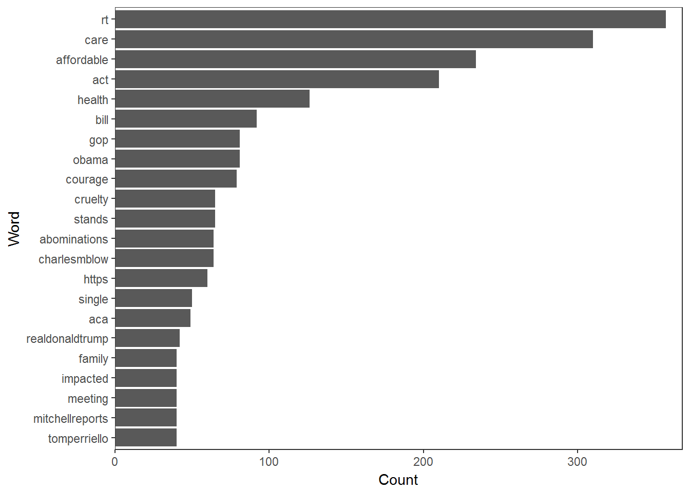
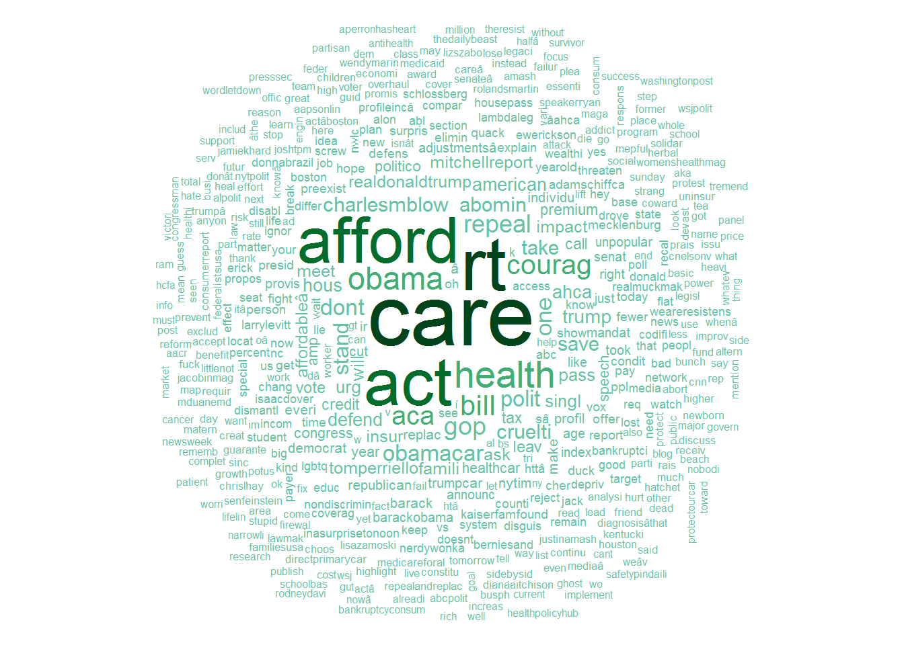
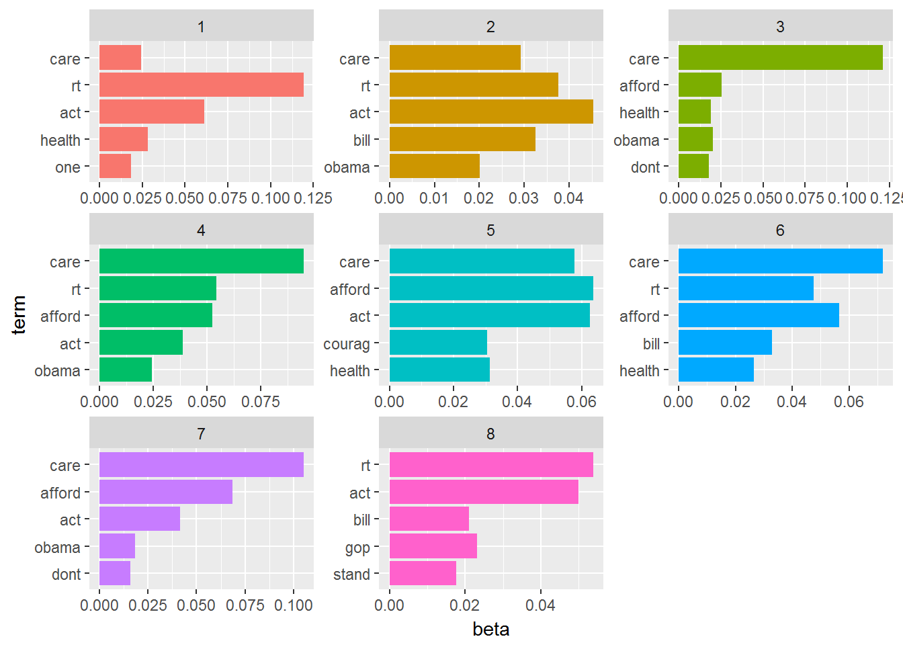

Get some tweets from Twitter to analyze and visualize Set up Twitter API: Selecting data including Obamacare, ACA, Affordable Care Act, and #ACA (n=1000)
figure 17_ Comparison of words Now that we’re sure there’s a difference, what can we say about the difference in the content? We’ll use the tidytext package. We start by dividing into individual words using the unnest_tokens function, and removing some common stopwords. As we can see the most frequently used word when discussing ACA on Twitter is rt (Republican Party), care, act, afforadable, health, obama, and so on. From the table, we found that most people discussed about political issues (i.e., the topics of republican and democratic parties), affordable care act itself, and finanical concerns (i.e., bill, pay, etc).

Sentiment analysis: Since we’ve observed a difference in sentiment between the Android and iPhone tweets, let’s try quantifying it. We’ll work with the NRC Word-Emotion Association lexicon, available from the tidytext package, which associates words with 10 sentiments: positive, negative, anger, anticipation, disgust, fear, joy, sadness, surprise, and trust.
To measure the sentiment of the Android and iPhone tweets, we can count the number of words in each category. (For example, we see that 41 of the 2331 words in the Android tweets were associated with “anger”). We then want to measure how much more likely the Android account is to use an emotionally-charged term relative to the iPhone account. Since this is count data, we can use a Poisson test to measure the difference:
figure 18_ From the below table, we could see that most people feel quite positive about ACA, the words they used are expressed their trust, anticipation, joy and positive feeling.
Data Preparation using Twitter: The Twitter search API does not return an exhaustive list of tweets that match your search criteria, as Twitter only makes available a sample of recent tweets. For a more comprehensive search, we will need to use the Twitter streaming API, creating a database of results and regularly updating them, or use an online service that can do this. Now that we have tweet texts, we need to clean them up before doing any analysis. This involves removing content, such as punctuation, that has no emotional content, and removing any content that causes errors.
figure 19_ Unsurprisingly, Word Cloud shows that most frequently mentioned terms are health, care, affordable, aca, and act. Except the discussion of insurance policy itself, people do talk frequently about political-related topics, such as Republican Party (rt), Grand Old Party (gop), and Obama. Also, some terms related to push forward or hold back the policy, such as courage, urge and repeal. Financial words are used, like pay, bill and save. Finally, specific names of people and place were mentioned in the tweets (i.e., Larry Levitt and Mecklenburg).

figure 20_
Topic Modelling
In text mining, we often have collections of documents, such as social media posts or news articles, that we’d like to divide into natural groups so that we can understand them separately. Topic modeling is a method for unsupervised classification of such documents, similar to clustering on numeric data, which finds natural groups of items even when we’re not sure what we’re looking for.
Latent Dirichlet allocation (LDA) is a particularly popular method for fitting a topic model. It treats each document as a mixture of topics, and each topic as a mixture of words. This allows documents to “overlap” each other in terms of content, rather than being separated into discrete groups, in a way that mirrors typical use of natural language.
Latent Dirichlet allocation is one of the most common algorithms for topic modeling. Without diving into the math behind the model, we can understand it as being guided by two principles: Every document is a mixture of topics and Every topic is a mixture of words.
This visualization lets us understand the eight topics that were extracted from the tweets. The most common words in topic 1 include “rt”, “care”, and “health”, which suggests it may represent health insurance and republican issues. Those most common in topic 2 include “obama”, “act”, and “bill”, suggeting that this topic represents issues related to obamacare. One important observation about the words in each topic is that some words, such as “act” are common within both topics. This is an advantage of topic modeling as opposed to “hard clustering” methods: topics used in natural language could have some overlap in terms of words.
